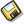

The complete list of keyboard shortcuts is available in the options dialog box  of the upper toolbar.
of the upper toolbar.
F1 |
Launch of MathGraph32 help in browser. |
F2 |
Reactivate the last tool. |
F3 |
Open the dialog box showing numerical objects and allowing their modification |
F4 |
Activation of tool for naming point or line . |
F6 |
Activation of tool for masking an object |
F7 |
Activation of tool for unmasking a hidden object (curtain). |
F8 |
Activation of tool for execution a macro |
F9 |
Open the protocol dialog box |
F10 |
Displays again the last indication for active tool (top right corner) |
Ctrl + Shift + c |
Copy the figure in the clipboard |
Ctrl + Shift +Alt + c |
Copy the figure in the clipboard with unity length conservation |
Ctrl + Alt + c |
Copy a permanent URL for the figure in the clipboard |
Ctrl + Suppr |
Graphic tool deletion |
Ctrl + b |
Circle trough two points creation tool |
Ctrl + Shift + b |
Circle through center and radius creation tool |
Ctrl + d |
Line through two points creation |
Ctrl + Shift + d |
Creation of a segment |
Ctrl + Alt + d |
Creation of a ray |
Ctrl + e |
Real calculation creation |
Ctrl + Shift + e |
Complex calculation creation |
Ctrl + f |
Real function creation (one variable) |
Ctrl + Shift + f |
Complex function creation (one variable) |
Ctrl + g |
Translation tool activation |
Ctrl + h |
Free text display creation |
Ctrl + Shift + h |
Linked to point LaTeX display creation |
Ctrl + j |
Cursor creation |
Ctrl + k |
Polygon creation |
Ctrl + Shift + k |
Surface creation |
Ctrl + L |
Length measure |
Ctrl + Shift + L |
Non oriented angle measure |
Ctrl + m |
Segment mark creation |
Ctrl + Shift + m |
Non oriented angle mark creation |
Ctrl + n |
New figure creation |
Ctrl + o |
Open new figure |
Ctrl + p |
Free point creation |
Ctrl + Shift + P |
Linked point creation |
Ctrl + Alt + p |
Point by coordinates creation |
Ctrl + S |
Save actual figure  . |
Ctrl + U |
Free display value creation |
Ctrl + Shift + u |
Linked to point display value creation |
Ctrl + Z |
Cancel last action on the figure |
Ctrl + Y |
Redo last action on the figure |